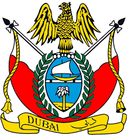

History Of Dubai

Go forward
The history of Dubai dates back centuries, and the city has undergone significant transformations to become the
modern metropolis it is today. Here is a brief overview of the history of Dubai and how it came into being:
-
Early Settlement: Dubai's location on the southeastern coast of the Arabian Peninsula made it an ideal
location for human settlement. Archaeological evidence suggests that the area was inhabited as early as
3,000 BCE by nomadic Bedouin tribes who engaged in fishing, pearl diving, and trade.
-
Fishing and Pearling: Dubai's early economy was primarily based on fishing and pearling. The city's
strategic location along the Arabian Gulf made it a vital hub for maritime activities, attracting traders
from neighboring regions.
-
Formation of a Settlement: In the early 19th century, the Bani Yas tribe, led by the Maktoum family, settled
in the area that would later become Dubai. They established a small fishing and trading village along the
Dubai Creek, a natural inlet that served as a natural harbor.
-
Trading Hub: Dubai's prominence as a trading hub grew in the late 19th and early 20th centuries. The city
played a significant role in the regional trade of goods such as pearls, spices, textiles, and gold. The
creek served as a vital link for trade between the Gulf region, India, and East Africa.
-
British Influence: In 1892, Dubai entered into a protectorate agreement with the British Empire, ensuring
the security of its borders and maritime trade routes. This agreement helped establish stability and
facilitate further economic growth.
-
Oil Discovery: In 1966, oil was discovered in Dubai, marking a turning point in the city's history. The
newfound oil wealth allowed Dubai to invest in infrastructure, education, healthcare, and modernization.
-
Diversification: Recognizing the finite nature of oil reserves, Dubai's leaders implemented a strategic plan
to diversify the economy. They focused on sectors such as trade, finance, real estate, tourism, and
logistics. This diversification strategy helped position Dubai as a global business and tourism hub.
-
Diversification: Recognizing the finite nature of oil reserves, Dubai's leaders implemented a strategic plan
to diversify the economy. They focused on sectors such as trade, finance, real estate, tourism, and
logistics. This diversification strategy helped position Dubai as a global business and tourism hub.
These free zones offered tax incentives, streamlined procedures, and state-of-the-art infrastructure.
-
Infrastructure Development: Dubai embarked on ambitious infrastructure projects to support its rapid growth.
This included the construction of modern ports, airports, highways, skyscrapers, and iconic landmarks such
as the Burj Al Arab and Burj Khalifa.
-
Global City: Today, Dubai is known as a global city, renowned for its impressive skyline, world-class
infrastructure, luxury tourism, trade fairs, and global business events. It continues to innovate and
diversify its economy, aiming to become a knowledge-based economy and a center for innovation and
technology.
Dubai's history is a testament to its resilience, entrepreneurial spirit, and visionary leadership. From its
humble beginnings as a fishing and trading village, it has emerged as a dynamic and cosmopolitan city that
attracts millions of visitors and businesses from around the world
Dubai
.jpg)
- 1973-1990: Early Development Phase
-
In 1971, the United Arab Emirates (UAE) was formed, and Dubai became one of its seven emirates.
-
Oil discovery in the 1960s contributed to the initial growth of the region, but by the early 1970s,
Dubai started diversifying its economy.
-
The Dubai World Trade Centre, a landmark building, was constructed in 1979, marking the city's
emergence as a business hub.
-
The Dubai World Trade Centre, a landmark building, was constructed in 1979, marking the city's
emergence as a business hub.
- 1990-2000: Transformation and Infrastructure Development
-
Sheikh Mohammed bin Rashid Al Maktoum became the ruler of Dubai in 1995, ushering in a period of
rapid development.
-
Major infrastructure projects were undertaken, including the construction of highways, bridges, and
the Dubai Creek Golf & Yacht Club.
-
In 1999, the establishment of the Dubai International Financial Centre (DIFC) aimed to attract
global financial institutions.
- 2001-2010: Global Recognition and Real Estate Boom
-
Dubai gained international recognition with the launch of the iconic Palm Jumeirah project, an
artificial island shaped like a palm tree, in 2001.
-
The Burj Al Arab, a luxury hotel, became an iconic symbol of Dubai's ambition and opulence when it
opened in 1999.
-
The real estate market experienced significant growth, with numerous high-rise buildings and
developments, such as Dubai Marina and Downtown Dubai.
-
Dubai's ambition to become a global aviation hub led to the expansion of Dubai International Airport
and the establishment of Emirates airline.
- 2011-2023: Continued Development and Diversification
-
Dubai hosted Expo 2020, a global event that showcased the city's innovation, culture, and economic
potential.
-
The city has placed emphasis on sustainability and green initiatives, aiming to become a smart city
and reduce its ecological footprint.
-
Infrastructure development continued with projects like Dubai Metro, Dubai Water Canal, and the
construction of new hotels, resorts, and entertainment venues.
-
Dubai has diversified its economy beyond oil and gas, focusing on sectors such as tourism, finance,
technology, and renewable energy.
It is important to note that Dubai's development is an ongoing process, and future plans and projects beyond
2023 will contribute to its growth and transformation. To delve deeper into the detailed evolution of Dubai, I
recommend exploring documentaries, books, and official sources that provide comprehensive insights into the
city's journey.
Life In Dubai

-
Cultural Diversity:
Dubai is a melting pot of cultures and nationalities. People from around the world
reside in Dubai, creating a multicultural and diverse society. This diversity is reflected in the cuisine,
languages spoken, and cultural events held throughout the city.
-
Expatriate Population:
A significant portion of Dubai's population consists of expatriates. Many
professionals from various countries come to Dubai for employment opportunities and contribute to the city's
vibrant and cosmopolitan atmosphere.
-
Safety and Security:
Dubai is known for its high level of safety and security. The city has low crime
rates, strict law enforcement, and a proactive approach to ensuring the well-being of its residents and
visitors.
-
Modern Infrastructure:
Dubai boasts modern and state-of-the-art infrastructure. The city is home to
impressive skyscrapers, luxurious residential developments, world-class shopping malls, and advanced
transportation systems, including an extensive metro network.
-
Tax-Free Income:
One of the attractions of living in Dubai is the absence of personal income tax.
Residents can enjoy tax-free salaries, allowing for potential savings and financial advantages.
-
Luxurious Lifestyle:
Dubai is synonymous with luxury and opulence. The city offers a wide range of
luxurious amenities, including upscale shopping experiences, fine dining restaurants, luxurious hotels, and
extravagant leisure and entertainment options.
-
World-Class Education and Healthcare:
Dubai provides access to world-class education and healthcare
facilities. The city is home to prestigious international schools, universities, and medical centers that
offer high-quality education and healthcare services.
-
Shopping Paradise:
Dubai is renowned as a shopping paradise. The city features numerous mega-malls,
such as the Dubai Mall and Mall of the Emirates, offering a vast array of international brands, designer
stores, and unique retail experiences.
-
Entertainment and Leisure:
Dubai offers a plethora of entertainment and leisure options for residents
and visitors. From theme parks, water parks, and indoor skiing to cultural festivals, concerts, and sporting
events, there is always something happening in Dubai to cater to diverse interests.
-
Outdoor Activities:
Despite being a modern metropolis, Dubai offers opportunities for outdoor
activities. Residents can enjoy various water sports, desert adventures like dune bashing and camel riding,
golfing, and exploring the city's parks and beaches.
-
Cosmopolitan Cuisine:
Dubai is a culinary hub that offers a diverse range of cuisines from around the
world. From traditional Emirati dishes to international flavors, residents can indulge in a wide variety of
culinary experiences.
-
Dynamic Social Scene:
Dubai has a vibrant social scene with numerous social and networking events,
cultural festivals, and entertainment options. Residents can engage in various activities, connect with
like-minded individuals, and explore the city's social offerings.
-
International Events and Expos:
Dubai hosts various international events and expos, showcasing
innovation, business opportunities, and cultural exchange. Events like Expo 2020 Dubai attract visitors from
all over the world and offer a platform for global collaboration.
-
Respect for Islamic Culture:
While Dubai is a modern and cosmopolitan city, it also respects its
Islamic heritage and traditions. It is important to be mindful of local customs and cultural norms, such as
modest dress codes and respectful behavior during religious occasions.
- Continuous Development:
Dubai is constantly evolving and expanding. The city has ambitious plans for
future developments, with projects focused on sustainability, innovation, and enhancing the quality of life
for residents.
Life in Dubai offers a unique blend of modernity, luxury, cultural diversity, and an exceptional standard of
living. The city provides a dynamic and cosmopolitan lifestyle, catering to the needs and aspirations of its
residents and visitors.
Go backward
Go back